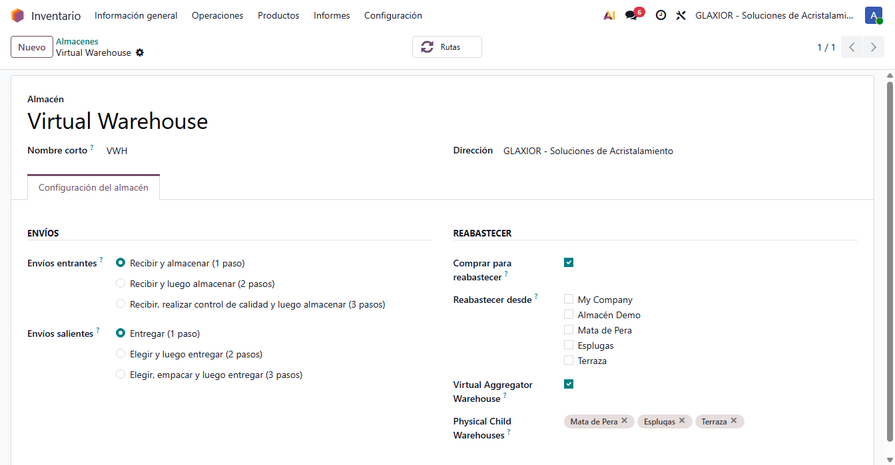
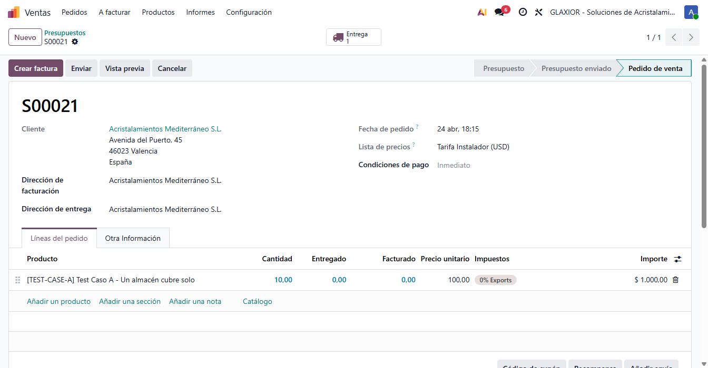
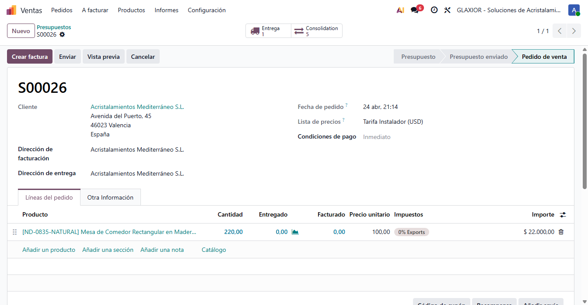
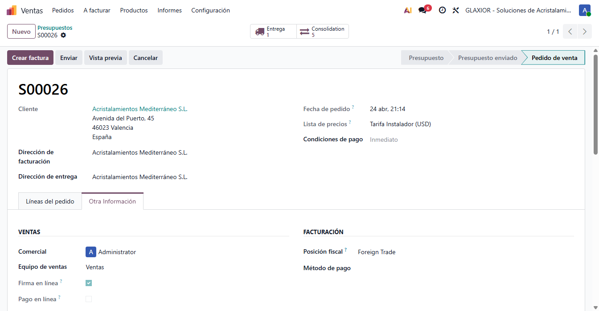
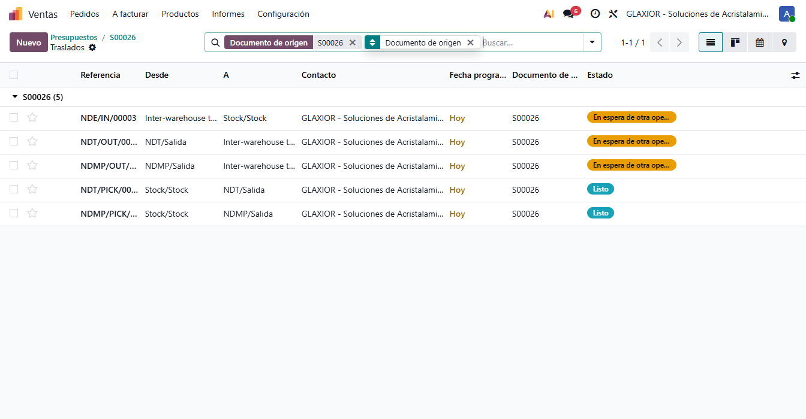

Selección automática de almacén y consolidación entre almacenes
Versión: 19.0.1.2.0 ·
Compatibilidad: Odoo 19 Enterprise ·
Licencia: LGPL-3 ·
Autor: Process Control
Cuando un pedido de venta se confirma contra un almacén virtual agregador, este módulo reasigna el pedido al almacén físico hijo con mejor cobertura y, si hace falta, dispara automáticamente las transferencias internas para consolidar el stock antes de la salida al cliente.
¿Qué resuelve?
Las empresas con varios almacenes físicos y stock repartido necesitan, al recibir un pedido, decidir desde dónde se sirve y, si el reparto del stock no permite servir desde un único almacén, mover internamente el material para consolidarlo antes de la salida. Hacerlo manualmente es lento y propenso a errores.
Este módulo automatiza esa decisión: el comercial sigue eligiendo el almacén virtual habitual y el sistema se encarga del resto.
Criterio de selección
- Cobertura calculada por pedido completo (no línea a línea).
- Gana el almacén físico que más cantidad del pedido puede aportar con su stock.
- Empate determinista: por secuencia del almacén y, en último término, por ID.
Configuración
- Activar en Inventario → Configuración → Ajustes las opciones Storage Locations y Multi-Step Routes.
- Crear los almacenes físicos en 2 pasos de entrega y un almacén virtual agregador con la ubicación de stock tipo view y las ubicaciones de los físicos reparentadas debajo.
- En el formulario de cada almacén físico, en la sección Reabastecer desde, marcar los demás almacenes físicos. Eso crea automáticamente las rutas inter-almacén que el módulo usa en el Caso B.
- Instalar el módulo.
- En el almacén virtual, en la sección Reabastecer, marcar el checkbox Almacén virtual agregador y enumerar los almacenes hijos en Almacenes físicos hijos.

Configuración del almacén virtual con sus tres almacenes hijos.
Caso A — un almacén cubre el 100%
El comercial crea el pedido contra el almacén virtual. Al confirmar, el sistema detecta que un único almacén físico cubre el 100% de la demanda, reasigna el pedido a ese almacén y deja que Odoo genere el flujo Pick + Out estándar. Sin movimientos extra.
| Variante |
Comportamiento |
Estado |
| Mono-producto |
Reasigna al almacén que tiene stock; un Pick desde ese almacén. |
Listo |
| Cambio de almacén |
El almacén habitual no tiene stock pero otro físico sí: el sistema cambia automáticamente a ese. |
Listo |
| Multi-producto |
Cobertura por pedido entero; el almacén que cubre todas las líneas gana. |
Listo |

Pedido reasignado al almacén físico ganador en el Caso A.
Caso B — consolidación automática
Cuando ningún almacén cubre el pedido por sí solo, el sistema:
- Reasigna el pedido al almacén que más unidades aporta.
- Divide cada movimiento del Pick al cliente en una porción make-to-stock (lo que se reserva del stock disponible) y otra make-to-order (las unidades faltantes).
- Lanza desde los demás almacenes físicos los aprovisionamientos necesarios, encadenados con la porción make-to-order mediante
move_dest_ids.
- El Pick al cliente queda en estado en espera hasta que llega todo el stock al almacén ganador. Solo entonces pasa a Listo.
Resultado clave. Nunca se procesa el Pick al cliente con cantidades a medias. La cadena MTS + MTO garantiza que el operario solo ve el Pick listo cuando todo el material está consolidado.

Pedido en Caso B con los smart buttons Entrega y Consolidación visibles.

Pestaña Otra información: modo de selección, almacén virtual original y consolidación requerida.

Listado de las transferencias entre almacenes que alimentan al ganador.
Trazabilidad en el pedido
- Modo de selección de almacén — caso aplicado: un almacén cubre, consolidación necesaria o sin stock.
- Almacén virtual original — el almacén virtual que el comercial eligió antes de la reasignación automática.
- Requiere consolidación entre almacenes — bandera marcada cuando el pedido entra en Caso B.
- Transferencias de consolidación — contador visible como smart button que abre el listado de movimientos inter-almacén asociados.
Consideraciones operativas
Decisión al confirmar. La elección del ganador se fija en el momento de confirmar el pedido y no se recalcula si el stock varía después. Para revaluar, cancelar y reconfirmar.
Líneas elegibles. Solo participan en el cálculo las líneas con productos almacenables y cantidad positiva. Servicios y productos descargables se ignoran.
Sin stock. Si ningún almacén tiene stock del pedido, el sistema deja el almacén virtual y registra el modo Sin stock disponible para que el equipo funcional decida la siguiente acción.
Soporte
Process Control — https://www.processcontrol.es
ProcessControl SL — Abril 2026